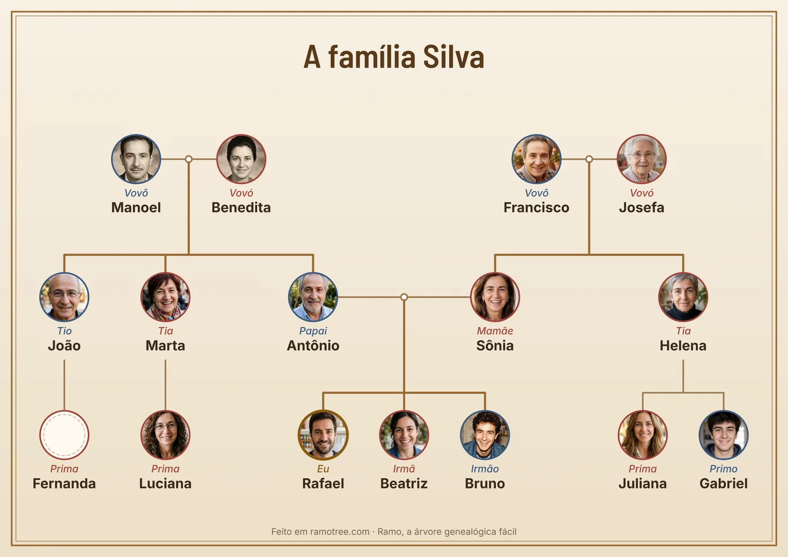

Como fazer uma árvore genealógica, passo a passo
Fazer a árvore da sua família é mais fácil do que parece: comece pelo que você já sabe, pergunte aos mais velhos enquanto pode e vá completando aos poucos. Aqui estão os passos e um modelo grátis para imprimir.
Quer começar agora? Crie sua árvore aqui mesmo: avós, pais, tios, primos e irmãos, com fotos se quiser, e baixe em PDF ou como imagem.

1. Comece por você
Anote o seu nome, quando e onde você nasceu. Depois seus pais e irmãos, e então seus avós. Escreva tudo o que sabe de memória, mesmo incompleto: uma data aproximada (“por volta de 1930”) vale mais do que um espaço em branco.
2. Pergunte à família
Os mais velhos são a melhor fonte, e o que não se pergunta a tempo se perde. Algumas perguntas que funcionam:
- Qual era o nome completo dos seus pais e avós, com o sobrenome de solteira?
- Onde e quando nasceram? Com quem se casaram, e onde?
- Quantos irmãos tinham? O que aconteceu com eles?
- Em que trabalhavam? Onde moravam?
- Você guarda fotos, cartas ou lembranças daquela época?
Leve o álbum de fotos: os rostos ajudam a lembrar. Fotografe as fotos antigas com o celular e, se deixarem, grave a conversa.
3. Procure os dados que faltam
Em casa costuma haver mais do que parece: certidões de nascimento e de casamento, santinhos, convites e fotos com algo escrito no verso. Fora de casa, os cartórios de registro civil têm nascimentos, casamentos e óbitos, os arquivos das paróquias guardam os batismos mais antigos, e o FamilySearch, gratuito, tem milhões de registros antigos já digitalizados, muitos deles do Brasil e de Portugal.
Anote de onde vem cada dado. Quando duas fontes não batem, você vai saber em qual confiar.
4. Organize: no papel ou no celular
Uma árvore no papel é ótima para começar. Mas a árvore cresce rápido (irmãos, tios, primos, cônjuges…) e o papel fica pequeno. Com o Ramo você adiciona cada parente tocando no cartão dele, e o app organiza tudo sozinho, com fotos, datas aproximadas e o parentesco de cada um. Não precisa de conta, e se você já tem uma árvore feita em outro programa, o Ramo abre arquivos GEDCOM.
5. Compartilhe com a família
Mande a árvore em PDF para o grupo da família: cada um pode completar o seu ramo com o Ramo, de graça, e devolver, e o Ramo junta as versões sem repetir ninguém. Quando estiver completa, imprima em tamanho grande ou dê de presente emoldurada.
Mais guias